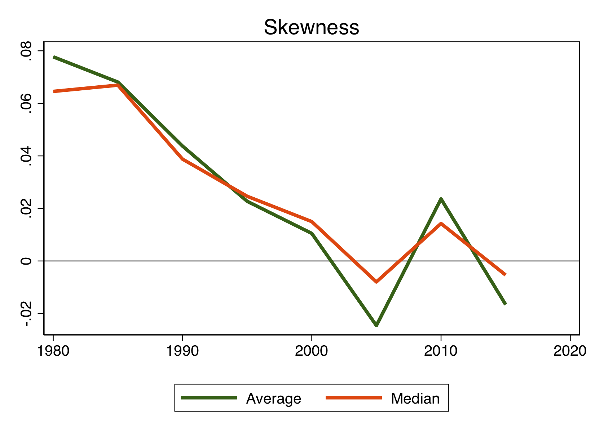

The Case of the Disappearing Skewness (with Valentin Haddad and Matthieu Gomez) First version: March 2020 This version: March 2020
Abstract: A well-known observation about firm-level returns is that they are positively skewed. We show that this positive skewness has slowly disappeared towards the end of the 20th century. In the 21st century, the distribution of idiosyncratic returns is symmetric. Using the entire cross-section of firms, we investigate possible explanations for the source of this change. This inquiry leaves us with a puzzle: none of the standard rationales behind the asymmetry of firm returns seem able to explain this phenomenon. Instead, the disappearance of skewness is present in firms of all types.

Download the paper
Home